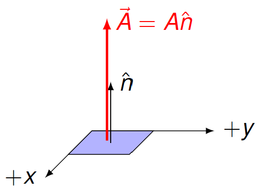

Gauss’ law¶
Overview¶
In the last lesson, we looked at the idea of electric field lines. When Michael Faraday first developed the idea that eventually became the electric field, he had in mind physical “lines of force” that start and stop at electric charges. Specifically, he thought of a tube beginning at a positive charge, and ending at a negative charge. Although James Clerk Maxwell, and his successors, later formalized this into a more abstract idea, the idea of field lines is a helpful one for various physical situations.
Gauss’ law is one important example of the utility of thinking in this way. Remember that field lines point away from a positive charge. So, suppose we put this positive charge in a closed box (so that all field lines leaving the charge also go through the box), then all of the field lines that penetrate the surface of the box are pointing outward, away from the box’s interior. If we say every electric field line going through the box is positive if it leaves the box, then the net sum of all of the field lines is positive. Similarly, if we replace the positive charge with a negative one, the sum is now negative, since all of the field lines are going into the box and the negative charge.
Thus, thinking in terms of field lines gives us an intuition that there is a relationship between the amount of charge inside of a closed surface, and the amount of electric field going through the same surface. This is the content of Gauss’ law. This relation can be very powerful, allowing us to rather simply find the electric field magnitude around certain distributions of charge. In this lesson, we will make this process more formal, and show some examples of how to use it in practice. We will also build up these charge distributions in vPython simulations, so that we can see directly that Coulomb’s law – added up for many charges – indeed gives Gauss’ law.
Here are the objectives for this lesson:
Define the concept of a gaussian surface.
State Gauss’ law for electrostatics.
Calculate the magnitude of the electric field for a symmetric charge distribution.
Electric properties of materials¶
Before we get into the mathematics of Gauss’ law, it is first necessary to talk about the electrical properties of materials. In particular, we will divide substances into two broad categories: conductors and insulators. Although this is a rather broad (and inaccurate) brush, for conductors, at least, we are on fairly safe ground.
The basic dividing line between the two categories is how easy it is for electric charge to move inside the material. You can think it terms of attaching a particular object to a battery – if you try to send excess electrons through the object, will current actually flow? If the material is a conductor, then the answer is yes! A conductor is a substance where charges will freely move (or “conduct”) through the substance without hindrance. Most metals are conductors, which is why they are the material of choice for making electric wires. On the flip side are insulators, substances where electric charge is not free to move at all. These materials are used to insulate electric wires, so you don’t get shocked when you touch them! Examples include glass and rubber.
So why is this division useful for Gauss’ law? The key fact we will use quite a bit is what happens when an external electric field passes through a conductor. Imagine we place a piece of copper inside of a mechanism that creates electric fields. Because the charges are free to move inside the conducting copper, the electric field will create forces on these charges. Therefore, they will start moving around. However, eventually they will arrange themselves into positions where the net force on each charge is zero. This means that the charges inside the copper have moved to create their own, internal, electric field that cancels out the external field! This process is shown in the picture below, where the red positive charges and green negative charges will separate to create the internal field.

Since this internal electric field cancels out the external one – the charges are now at an equilibrium position – this means that the net electric field inside a conductor is zero. This is the key physical fact that we will use.
The electric field inside of an ideal conductor is zero.
This zero internal electric field is caused by charge moving to the surface of the conductor. Note that if the conductor has an excess charge, that charge will create its own (external) field! To see this, note that the charges in the picture above arranged themselves on the conductor’s surface in order to cancel out the external field. However, on the outside of the conductor the electric field lines still leave these surface charges.
Electric flux¶
Counting field lines through a surface¶
Now, let’s start developing the intuitive picture given above in the overview. Remember that, in a rough sense, we saw that the number of electric field lines going through a closed surface is related to the charge enclosed inside that surface. To make this sharper, we need to define some vectors related to an arbitrary surface.
Suppose there is a (flat) surface in a plane with some area \(A\). Imagine a square tile on a bathroom floor, or a mat in front of a door. The normal vector \({\hat n}\) to this surface is a vector that points perpendicular to the plane of the surface. Note that we are using the word “normal” here in the same sense we did when we talked about the normal force. Something is normal if it is perpendicular to something else – just as the normal force is perpendicular to a surface, the normal vector is also perpendicular to the area in question. This vector \({\hat n}\) will point towards the “outside” when we have a closed surface; it will help us determine the direction of the electric field lines through the surface. Finally, the area vector \({\vec A}\) of the surface is a vector \({\vec A}\) with a magnitude equal to the area of the surface, and whose direction is given by the normal vector \({\hat n}\).

We will now define “electric flux” \(\Phi_E\) as a way to quantify how many electric field lines pass through an area. If you think about what this means, we want to see how much of the electric field vector is perpendicular to the surface the field passes through. Thus, the angle between the electric field and the surface will matter. This is why I defined the area vector above! If the electric field is parallel to the area vector, then the field is perpendicular to the surface, and thus “through” the surface. However, if the electric field is perpendicular to the area vector, then the field does not go through the surface, but is instead “along” the surface. This generates zero electric flux through the surface.
Whenever we wanted to find how much of one vector was in the same direction as the other, we used the scalar product (Lesson 11) to find it. In other words, the scalar product of two vectors is larger when the angle between the vectors gets smaller. This is because, for two vectors \({\vec C}\) and \({\vec D}\), the scalar product is given by their magnitudes \(C, D\), and the angle \(\theta_{CD}\) between the vectors:
Thus, we can define the electric flux through an surface of area \(A\) as the scalar product of the electric field \({\vec E}\) and the area vector \({\vec A}\) of the surface. Intuitively, we can say that there are “more field lines” passing through the surface when (1) there is a larger electric field or (2) a larger area, and (3) these two are aligned so the field lines pass through the surface.
Quantity: electric flux \(\Phi_E\)
Definition: $\( \Phi_E = {\vec E} \cdot {\vec A} \)$
Units: N m\(^2\)/C
You can see this in the figure below, which shows the extreme cases. On the left, the electric field lines pass directly through the blue surface. This means that the electric field is pointing in the same direction as the area vector, so there is zero angle between them, maximizing the flux. On the right, the electric field points along the surface, so none of the field lines actually go through the surface. Thus, the electric fiel \({\vec E}\) is perpendicular to the area vector \({\vec A}\), and the scalar product is zero – there is no electric flux.

{\bf Watch your angles!} One confusing point when finding the electric flux is how the direction of the electric field is given. For example, suppose the field is perpendicular to the surface. You might think this means the angle between \({\vec E}\) and \({\vec A}\) is then zero, but it’s not! That’s because the vector \({\vec A}\) is also perpendicular to the surface (because it is built from the normal vector). So if the field is perpendicular to the surface, that gives the maximum flux, since the field and area vectors point in the same direction. Be careful when you use your angles!
An example of electric flux¶
Let’s work through an example. Suppose a large, flat conducting plate is placed in an external electric field \({\vec E} = (500. \textrm{ mN/C}) {\hat x} + (700. \textrm{ mN/C}) {\hat y}\). A closed surface (indicated by the dashed lines) has \(L = 1.20\) m, \(H = 6.00\) m, and extends a distance of \(W = 75.0\) cm in the direction perpendicular to the screen. Exactly half of the surface is inside the plate in the \(x\) direction. We will find the electric flux through each of the six sides of the surface.
You can see a three-dimensional representation of the situation in this example, you can run the following two cells. The first imports the necessary vPython modules.
from vpython import arrow, box, canvas, color, curve, label, vector
Next, we create both the (blue) conducting plate and the (gray) closed surface we will calculate the flux through. Yellow vectors represent the electric field passing through this surface, creating the flux. I also added a set of coordinate axes, so you can see the direction of the area vector for each of the six sides. Note that I only drew the field vectors through the surface, to avoid cluttering the visuals; this is not the only place the field actually is!
canvas()
# Parameters for electric field vector arrows
yStep = 1
zStep = 0.75
# Size of closed surface (all in meters)
L = 1.20
H = 6.00
W = 0.750
# Create closed surface
surface = box(pos = vector(0.5, 0, 0), length = L, height = H, width = W, opacity = 0.5)
# Create conducting plate
plate = box(pos = vector(0, 0, 0), length = L, height = 2 * H, width = 4 * W, color = color.blue)
# Create coordinate axes
curve(vector(-5, 2, 0), vector(-5, 0, 0), vector(-3, 0, 0))
curve(vector(-5, 0, 0), vector(-5, 0, 2)
)
label(pos = vector(-5, 2, 0), text = 'y')
label(pos = vector(-3, 0, 0), text = 'x')
label(pos = vector(-5, 0, 2), text = 'z')
# Create electric field vectors: the axis vector of
# these arrows is in the same ratio as the original
# field, so the direction of the field is accurate;
# the field vector locations are chosen for aesthetics
for yyy in range(int(H / yStep)):
for zzz in range(int(2 * W / zStep)):
arrow(pos = vector(0, -H / 2 + yStep * (yyy - 1), -W / 2 + zStep * zzz), \
axis = vector(1.5, 2.1, 0), shaftwidth = 0.1, color = color.yellow)
Now we calculate the flux through the given surface. We will do this one side at a time; the descriptions of the surface sides are based on the default viewpoint given in the vPython simulation above. Starting with the right side, the normal vector points in the \(+x\) direction. The right side of the surface is at a constant \(x\) value, so it lies in the \(y-z\) plane. Going “outward” from the surface thus goes perpendicular to the surface, which is in the direction of increasing \(x\). Multiplying the dimensions \(H\) in the \(y\) direction (up/down) and \(W\) in the \(z\) direction (into/out of screen), this gives an area vector of \(HW {\hat x}\). Taking the scalar product of this with the electric field vector given previously, we have
Turning to the left side, notice that this side of the surface is completely inside the conducting surface. This means that the electric field through that surface is zero, so we can immediately say that \(\Phi_{left} = 0\).
The remaining four sides are half in and half out of the conducting plate. This means that we only count half of the area of those sides; we will multiply each area vector by one-half to get the amount of area where a non-zero electric field exists. Think about which way you move when going from the inside to the outside of the closed surface to get the direction of the normal vector \({\hat n}\), and thus the area vector \({\vec A}\). In particular, running through the other sides,
\begin{eqnarray*} \Phi_{top} &=& {\vec E} \cdot [(1/2) LW (+{\hat y})] = (1/2) E_y LW = (0.5)(0.700 \textrm{ N/C})(1.20 \textrm{ m})(0.750 \textrm{ m}) = +0.315 \textrm{ N m}^2/\textrm{C} \ \Phi_{bottom} &=& {\vec E} \cdot [(1/2) LW (-{\hat y})] = -(1/2) E_y LW = -(0.5)(0.700 \textrm{ N/C})(1.20 \textrm{ m})(0.750 \textrm{ m}) = -0.315 \textrm{ N m}^2/\textrm{C} \ \Phi_{front} &=& {\vec E} \cdot [(1/2) LH (+{\hat z})] = 0 \ \Phi_{back} &=& {\vec E} \cdot [(1/2) LH (-{\hat z})] = 0 \ \end{eqnarray*}
Let’s make a few comments here. For the top and bottom sides, all of the electric field that enters the surface at the bottom will leave the surface at the top, so these two fluxes have opposite signs – positive for leaving, and negative for entering field lines. For the front and the back, since the area vectors point along the \(z\) axis, and the electric field does not point in this direction, the fluxes are both zero.
Problem: A constant electric field of \({\vec E}\) = (-113 N/C) \({\hat x}\) + (90.3 N/C) \({\hat y}\) + (-28.4 N/C) \({\hat z}\) exists in a particular region. Consider a cubic surface whose center is at the origin, and whose sides are 10.0 cm in length, as shown in the figure below. Find the electric flux through each of the six sides of the cubic surface. Answers: -0.284 N m\(^2\)/C (top); 0.284 N m\(^2\)/C (bottom); 1.13 N m\(^2\)/C (left); -1.13 N m\(^2\)/C (right); 0.903 N m\(^2\)/C (near); 1.13 N m\(^2\)/C (far)
Note that, for the previous example, the surface is closed – there are no holes in it! – and it also does not enclose any charge. Another way to say this latter point is that every electric field line entering the surface eventually leaves it; no field lines start or stop on charges inside the cube. This leads us to Gauss’ law, where we start putting charges inside closed surfaces.
Gauss’ law and examples¶
Gauss’ law¶
We now have all the framework we need to state Gauss’ law. Remember that our intution is that the number of electric field lines going through a closed surface is proportional to the net amount of charge enclosed by that surface. For “number of field lines”, we will now say “electric flux” \(\Phi_E\). We also need to have a closed surface, so that none of the field lines “escape” through holes in the surface. Thus, we give these surfaces a special name: a gaussian surface is a closed surface, i.e. with no holes or other boundaries.
So our intuitive idea now says that the electric flux through a gaussian surface is proportional to the net charge inside. We will call this net charge \(Q_{enc}\), for the enclosed charge. Since the flux and \(Q_{enc}\) are proportional, there is a constant value that relates the two. The complete mathematical statement is given below.
Gauss’ law: The total charge \(Q_{enc}\) inside of a gaussian surface is related to the electric flux \(\Phi_E\) through the surface by
\[ \Phi_E = \frac{Q_{enc}}{\epsilon_0} \]where the constant \(\epsilon_0\) is given by
\[ \epsilon_0 = 8.85 \times 10^{-12} \textrm{ C}^2/\textrm{N m}^2\]
Note that this constant \(\epsilon_0\) is just another way of expressing the constant \(k\) we saw in Lesson 28 (Coulomb’s law), since
An example: a single point charge¶
We will see this now by treating the simplest case of Gauss’ law – namely, find the electric flux through a spherical surface of radius \(R\) due to a single point charge \(Q\) at its center. Going through this example, we will see the general procedure used to solve any Gauss’ law problem.
First, given a charge distribution, we find a gaussian surface that matches the symmetry of the problem; this makes the calculations much easier. What do I mean by “match the symmetry”? Well, think about a point charge sitting at the origin. If I revolve around the charge – meaning, if I move to another position, just with the same distance away from the charge – then the situation looks exactly the same. This means I should get the same answer for the electric field at this new position. What is a shape that looks the same if I move to any new position with the same radius? A sphere! Thus, a spherical gaussian surface matches the symmetry of a single point charge, in that the physics of the problem looks exactly the same when you are at the same radius from the charge.
Now we need to think about how to find the electric flux. We will do this by taking the total area \(A_{sph}\) of the sphere, and dividing it into little flat bits \(\Delta A_i\); we are indexing each piece by a label \(i\). Obviously, a sphere is not flat, so eventually we want to mathematically take the pieces of area to be as small as possible. In other words, we will take the limit \(\Delta A_i \to 0\). For now, though, we are not going to worry about it. Since we chose flat pieces, then we can easily say what the direction of the normal vector \({\hat n}\) is for each piece (choosing the direction away from the center of the sphere). This means each flat bit has an area vector \({\vec A}_i = (\Delta A_i) {\hat n}\).
We can also calculate the electric field \({\vec E}_i\) at the center of each piece \(\Delta A_i\). Notice that the index \(i\) matches up; the electric fields will have different directions at difference area bits. This allows us to find the total electric flux through the sphere, by adding up the fluxes through each bit of area. Specifically, with the electric flux through an area \(\Delta A_i\) given by \({\vec E}_i \cdot {\vec A}_i\), the sum is
So what are these electric field vectors \({\vec E}_i\)? This is where choosing the sphere, to match the symmetry of the point charge, comes in handy. Since all of the areas have the same distance \(R\) away from the point charge, they all have the same magnitude \(E_i\), namely
For the direction, since the point charge is at the origin, the position vector \({\vec r}_i\) of each area points directly away from the origin as well. Thus, the electric field at area \(\Delta A_i\) is
But this unit vector \({\vec r}\) is the same as the normal vector \({\hat n}\) for the area! Both point away from the origin, and both have magnitude one. Thus, since \({\hat r} \cdot {\hat r} = 1\), if we find the electric flux through the piece of area \(\Delta A_i\), we have
Note that the first piece of the last expression is constant everywhere on the sphere, so it can be factored out of the sum:
In the last step, we used the fact that the sum of all the area pieces is just the surface area of a sphere, or \(\sum_i \Delta A_i = A_{sph} = 4 \pi R^2\). Finally, we can cancel the \(R^2\) factors in numerator and denominator to give
which equals \(Q / \epsilon_0\), if we use the fact that \(k = 1/(4 \pi \epsilon_0)\). It all works out!
The single charge in vPython¶
As we just saw, Gauss’ law holds for a single charge inside of a spherical gaussian surface. Because we used the symmetry of the problem, the calculations never got too complicated – we definitely weren’t using integral calculus anywhere! However, you may have a lingering doubt that I’ve pulled a fast one on you. After all, I put the charge exactly at the center of the sphere to do the calculation. But Gauss’ law says that the position does not matter, that you can put the point charge anywhere inside the sphere, and get the same answer! So what gives? Did I just pick the only case that works, or is Gauss’ law everything that is promised?
Well, doubt no more! Gauss’ law does, in fact, work whereever the point charge is inside the sphere. However, showing that mathematically requires the integral calculus that I didn’t use previously. To avoid this, I am going to have vPython numerically find the answer, and show that everything matches up. First, let’s import the necessary modules.
from vpython import canvas, color, cylinder, dot, norm, pi, random, sphere, sqrt, vector
Let’s outline what we are about to do in vPython code. This is going to repeat the basic process we saw above: divide the surface area of the sphere into small bits, find the electric flux through each area piece, then add all the contributions back together to get the total. This total should be equal to \(Q / \epsilon_0\), according to Gauss’ law.
However, dividing the sphere into pieces of area can be tricky. To do this, I am going to use a pretty naive idea, but amazingly, it actually gives good results! This idea is to randomly place a bunch of flat disks around the sphere, so that the center of each disk is the same radius \(R\) away from the origin, and the sum of all the disk areas gives the total surface area of the sphere. You might think there are better ways to place the disks on the sphere, and there are, but like I said, this works, so let’s go with it.
There are a few details to work out. If we choose \(N\) flat disks of radius \(r_{disk}\), then to have the sum of their areas be the same as the sphere’s surface area, then
where I pulled the \(4 R^2\) outside the square root. Each disk is going to be placed at a random location. To find this location, I pick a random position \({\vec r}\) with coordinates \((x, y, z)\) inside the cube centered at the origin with side length 1. Then I find the unit vector \({\hat r}\) pointing in the same direction as that point. Notice this gives two vectors for the price of one – the center of the disk will be at \(R {\hat r}\), and its normal vector \({\hat n} = {\hat r}\)!
The code for this placement process is given in the next code cell. The function randomDisks() places a number of random disks on the sphere. The arguements are the radius R of the sphere, and the number of disks numDisks to be placed. The results returned as a list of vPython cylinder objects.
def randomDisks(R, numDisks):
'''
Given the desired radius for the gaussian
surface, create a list diskList of numDisks
cylinder objects on this surface at random
locations, where the total area of all disks
is equal to the area of the sphere.
'''
# Find disk radius required so that the total
# disk area is same as sphere area; create
# list to store disks
diskRadius = 2 * R / sqrt(numDisks)
diskList = []
# Create disks
for iii in range(numDisks):
randPos = norm(vector(random() - 0.5, random() - 0.5, random() - 0.5))
diskList += [cylinder(pos = R * randPos, axis = 0.01 * randPos,
radius = diskRadius, color = color.blue, emissive = True)]
# Return list of cylinder objects
return diskList
Next, I create a seperate function diskFlux() to calculate the electric flux through each disk. The arguments of this function are a vPython cylinder object disk with radius and axis attributes, and a vPython vector field giving the electric field at the center disk.pos of the disk. Using this function simplifies the code a bit, since we will be doing this operation for all the disks. The function returns the scalar product of the area vector \({\vec A}\) and the electric field \({\vec E}\), which is the electric flux through the disk.
def diskFlux(disk, field):
'''
Given a cylinder object, and the electric
field at the center of this object, return
the electric flux through the object, where
the area vector is found using the axis
attribute of the disk.
'''
# Find the area vector of the disk, and
# take the scalar product with the given field
areaVec = (pi * disk.radius ** 2) * norm(disk.axis)
return dot(areaVec, field)
Finally, I create a function electricFlux() to find the total electric flux. It takes a list chargeList of point charges, each of which has pos and charge attributes. The other arguments are the radius R of the sphere, and the number of disks numDisks. The default for the number of disks is chosen to be 100. The function returns the total electric flux calculated for the spherical gaussian surface.
def electricFlux(chargeList, R, numDisks = 100):
'''
Given a list of point charges (sphere objects
with pos and charge attributes), find the
electric flux through a spherical gaussian
surface with given radius.
'''
# Physical parameter
k = 8.99E9 # electric constant(N m^2/C^2)
# Initialize electric flux variable
elecFlux = 0
# Create disks on surface
diskList = randomDisks(R, numDisks)
# For each disk, calculate the electric field
# at the center of the disk (taken as pos, since
# the thickness of each disk is 0.01), and adds
# this to the total electric flux
for disk in diskList:
for pointCharge in chargeList:
# Find relative position vector
rVec = disk.pos - pointCharge.pos
# Find electric field at disk using
# relative position vector, distance
elecField = k * pointCharge.charge * norm(rVec) / (R ** 2)
# Find disk contribution to total
# electric flux
elecFlux += diskFlux(disk, elecField)
# Return final electric flux value
return elecFlux
Let’s now try out this code, by seeing if it agrees with the mathematical derivation we did earlier. The code cell below places a \(+1.00 \ \mu\)C charge at the origin, and finds the electric flux through a spherical gaussian surface of radius 1.00 m. If we use Gauss’ law, we expect that this flux will equal
Run the code cell below, and see what the results are.
canvas()
# Physical parameters
e0 = 8.85E-12 # epsilon naught
Q = 1E-6 # unit of charge (C)
R = 1 # radius of gaussian surface
# Create list of charges
chargeList = [sphere(pos = vector(0.75, 0, 0), charge = Q, color = color.red, radius = 0.1)]
# Calculate electric flux
electricFlux(chargeList, R)
Surprisingly, the random disk method works rather well! The number you get should be spot on with the theoretical value from Gauss’ law. Using random variables is actually common practice in a variety of fields, such as computer science, operations research, and data science. This simple method is known as the Monte Carlo method, after the famous casino town on the French Riviera.
However, this does not really answer the question that we started off with, namely, what if we move the charge? Change the position of the single point charge in chargeList above to vector(0.1, 0, 0), then run the cell again. You still get roughly the same answer. When I ran it with this position, I got \(1.126 \times 10^5\) N m\(^2\)/C, compared to the actual answer of \(1.129 \times 10^5\) N m\(^2\)/C, so only about a 0.3% error. Moving the charge to vector(0.3, 0, 0) gives \(1.097 \times 10^5\) N m\(^2\)/C, so the error has grown to only 2.8% – still pretty good! Eventually, though, the error starts to build up, as you move the point charge further from the origin.
Problem: Change
chargeListso that it includes two charges of opposite sign, but the same size charge (remember to make the negative one green!). Place one at \(r_x = 0.3\), and the other at \(r_x = -0.3\). Before you run the cell again, what value do you expect for the total electric flux? Now run the cell above, and see if you get the answer you expect. If its different, why might that be? Experiment with changing the positions of the two charges, and see how your results vary.
Summary¶
Gauss’ law is a powerful technique to find the electric field for a symmetric charge distribution. Whenever the physical situation looks the same when you rotate your perspective, or move along a line, then you can set up a gaussian surface that matches the symmetry. From this surface, you can choose the field that goes along with this symmetry, and rather easily solve for the magnitude of the field. Most of the hard mathematical work is done for you!
Although we do not discuss it here, there is a version of Gauss’ law for any force that obeys an inverse square law. This means there is a gravitational version of Gauss’ law, with similar properties to what we saw here: the number of gravitational field lines through a closed surface is proportional to the mass enclosed by the surface. The constant of proportionality will depend on \(G\) here, rather than \(k\). Unlike the electrostatic force, however, there is no gravitational version of a “conductor”. This means that there is a gravitational field everywhere in the Universe, regardless of the location of any masses. By the way, this is the reason that gravitational waves are such a powerful new technique in astronomy – they pass through everything! Different kinds of electromagnetic waves (light) can be stopped by various kinds of matter, but a gravitational wave will go right through.
After this lesson, you should be able to:
State the definition of electric flux.
State Gauss’ law.
Use Gauss’ law to find the electric field at a given position near a charge distribution.